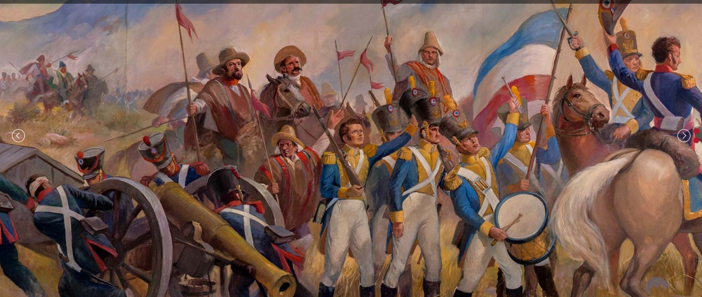

Bienvenidos
Bienvenido al Museo del Carmen de Maipú
Fundado en 1956, el Museo del Carmen de Maipú, institución dependiente de la Corporación Voto Nacional O’Higgins, constituye un espacio privilegiado para adentrarse en la historia de valiosísimas colecciones provenientes de legados, depósitos, adquisiciones y donaciones particulares.
Misión
El Museo del Carmen de Maipú busca preservar, exhibir y vincular su patrimonio histórico con la ciudadanía y poner a su alcance el conocimiento de sus colecciones, que representan la presencia testimonial de acontecimientos, personajes y objetos desde sus orígenes ancestrales, vinculados con la historia patria y sus principales protagonistas.
Visión
Nuestra visión es ser una institución de referencia nacional que comunique el valor histórico y social de nuestro patrimonio a todas las comunidades sin excepción: ser un espacio de encuentro abierto para todos y todas nuestros visitantes.
Objetivo
El Museo del Carmen de Maipú tiene como objetivo comunicar a través de sus colecciones la historia de Chile, principalmente el significado de la Batalla de Maipú, mediante los objetos patrimoniales que custodia, restaura, documenta, investiga, interpreta, exhibe y difunde de manera permanente en el tiempo.
ÁREAS DEL MUSEO
- Gestión y Administración: El área se centra en desarrollar e implementar estrategias y acciones que permitan el cumplimiento de la misión y objetivos del museo como institución cultural al servicio de la comunidad nacional.
- Educación y Mediación: El Área de Educación y Mediación desarrolla programas vinculados con el currículo escolar en espacios virtuales y presenciales de acuerdo a las necesidades y exigencias de la asignatura y nivel educativo. Además, suma el material audiovisual histórico y artístico disponible para público de acceso universal.
- Colecciones: El Área de Colecciones tiene como función primordial documentar, investigar, conservar, restaurar y gestionar las colecciones a nivel administrativo, además de realizar propuestas curatoriales para las exposiciones y gestionar préstamos de obras y colaboraciones con otras instituciones educativas y culturales.
- Comunicaciones: El equipo de comunicaciones crea, difunde y coordina la relación del museo con medios de comunicación, socios estratégicos e instituciones culturales. Es también responsable de la virtualización del museo, manejo de redes sociales, elaboración de contenido audiovisual educativo y gestionar información, documentos y contenidos digitales a través de todas nuestras plataformas.